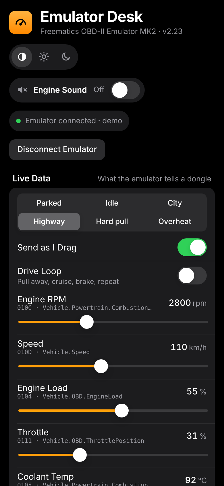
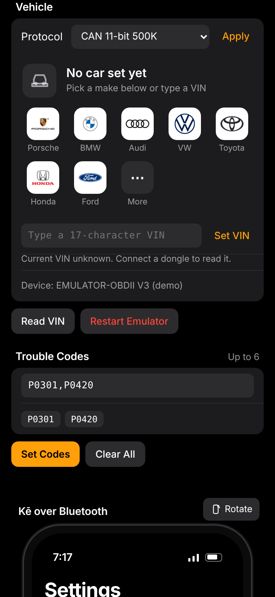
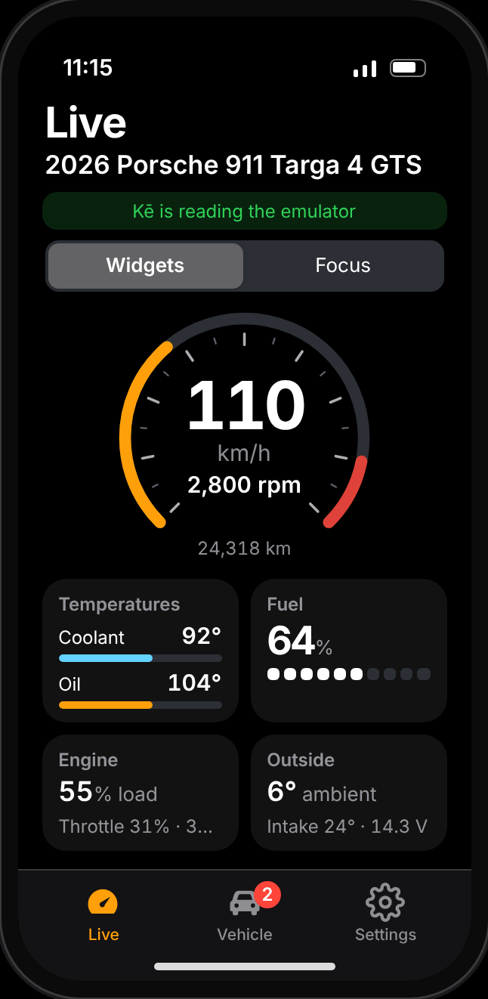
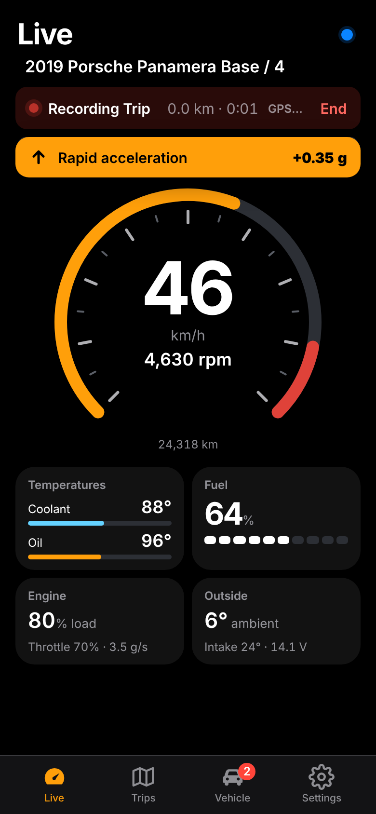
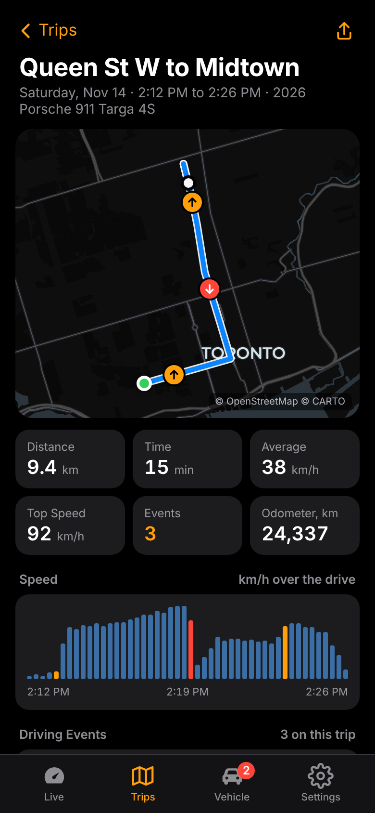
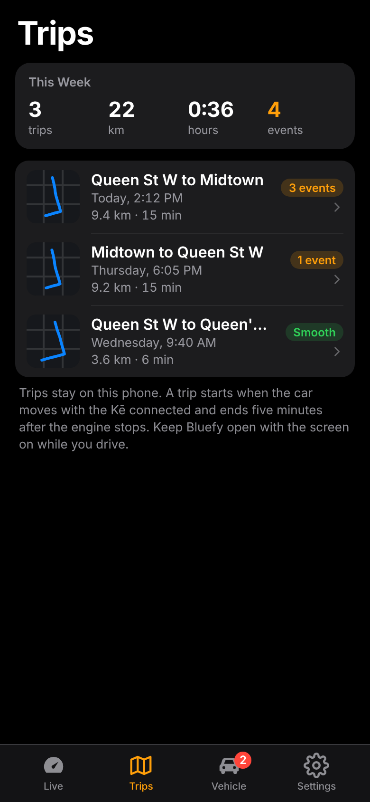
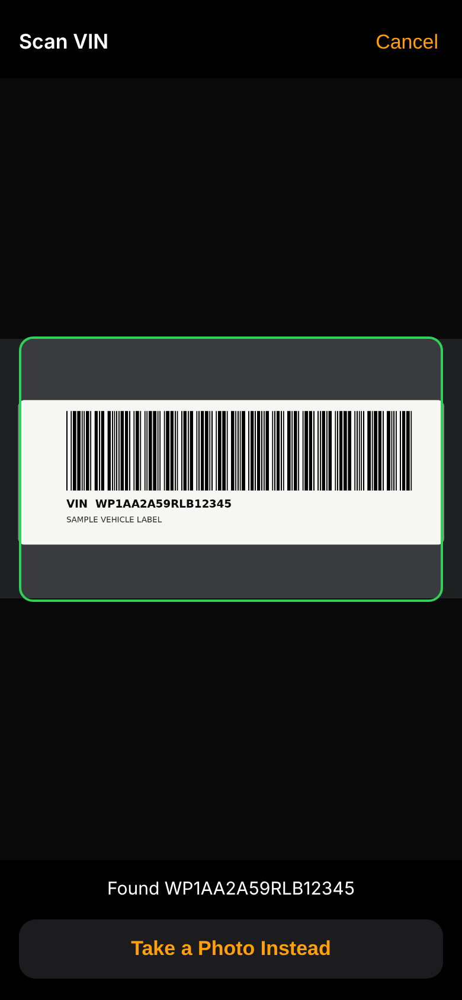
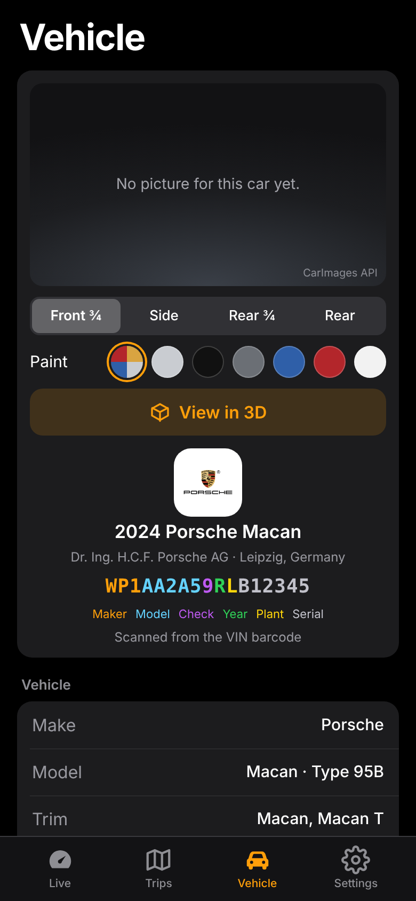

Emulator Desk drives a Freematics MK2 emulator from Google Chrome over its USB cable, so a Mac can do what the Windows-only Freematics GUI does. You set live engine values, the VIN, the bus protocol and trouble codes, and any OBD-II dongle or scan tool plugged into the emulator reads them as if it were in a real car. It runs from a web page, with nothing to install, and follows Apple's Human Interface Guidelines in light and dark mode.

Live dataTwelve sliders for the common Mode 01 values, oil temp and odometer included, with presets from Parked to Overheat. Values go out as you drag.

Vehicle and codesProtocol, VIN and up to six trouble codes. Tap a car maker to load a sample VIN; the car and its logo show above.

Kē phone viewThe phone the Kē app runs on, with Live as Widgets or Focus. Rotate turns it sideways to the twin-dial cluster.
phone.html in Bluefy calls the dongle the Kē, shows Live as Widgets or Focus (twin dials when held sideways), records each drive to Trips, shows a picture of the car, reconnects if it drops, keeps the screen on and can scan a VIN barcode.
Any ELM327 dongle shows as the Kē. It reads classic OBD-II, or OBD on UDS for 2027 cars and EVs, where it adds battery charge and module names.
Sliders read back the emulator's values on connect. Its firmware can't report its VIN, so the VIN box fills in from the dongle.
Flip the Engine Sound switch and a flat-six plays, built from single cylinder firings. It thumps at idle, howls near redline and crackles on lift-off.

Recording a tripOnce the car moves with the Kē connected, a red bar shows distance and time, and a banner flags rapid acceleration or hard braking as it happens.

Trip on a mapWhen the trip ends it opens on a map with the route and each event marked, then the stats, a speed chart and the events.

TripsEvery trip with its route, the week's totals and a Smooth or events badge. The last 50 stay on the phone.

Scan VINThe barcode button beside Decode opens the camera and reads the door-jamb or windshield barcode on its own.

Decoded carA studio picture of the car, then logo, model, year and plant, with engine, body and drivetrain from NHTSA.
From the car's own speed: rising faster than 0.35 g is rapid acceleration, slowing faster than 0.4 g is hard braking. GPS draws the route. A trip ends five minutes after the engine stops.
Code 39, Code 128, Data Matrix, QR and PDF417, preferring a VIN with a valid check digit. Without a live camera, Take a Photo reads a picture instead.
Once a VIN is decoded the car shows from four angles in seven paints, and in 3D. A switch in Settings turns pictures off.
| Piece | Version | What it does | Loaded from | Licence |
|---|---|---|---|---|
| Emulator Desk and Kē | 2.28 | The whole app, no other libraries or web fonts; type is the system font | index.html, phone.html, worker/ | Written for this app |
| Freematics AT commands | EMULATOR-OBDII V3 | ATSET, ATGET, ATCLR DTC and friends | Built into the emulator | Freematics |
| OBD-II PIDs, VSS names | J1979, J1979-2/-3, ISO 14229, VSS 4 | Each value has a VSS name (Vehicle.Speed) and a PID with its byte encoding | Hard-coded | Public standards |
| MapLibre GL JS with CARTO Dark Matter and Positron | 5.24.1 | Draws each trip's route and events on a map that matches dark or light mode | jsDelivr (unpkg backup) when a trip opens; tiles from basemaps.cartocdn.com | BSD-3; map data ODbL |
| barcode-detector, zxing-wasm | 3.2.3, 3.1.6 | Reads VIN barcodes where the browser has no reader of its own | jsDelivr, on first Scan | MIT; Apache-2.0 |
| Integration | Used for | Details |
|---|---|---|
| Web Serial API | The emulator | CP2102 or CH340 USB chip, 38400 baud 8N1, picked in Chrome. The MK2 needs 12V. |
| Web Bluetooth | The Kē dongle | ELM327: Mode 01, or 22F810, 22F4xx, 22F802, 1942330802 on UDS. |
| Geolocation API | Trip routes | watchPosition at high accuracy while the Kē is connected and Record Trips is on. Positions stay on the phone. |
| Photon (komoot) | Trip names | photon.komoot.io/reverse, no key. Sends a trip's start and end point once to name it. |
| NHTSA vPIC | VIN details | vpic.nhtsa.dot.gov/api/vehicles/DecodeVinValues/{VIN}, no key, sends only the VIN. |
| CarImages API | Car pictures | Through the ke-carimages Cloudflare Worker, which holds the key, serves only this site and caches each picture. Make, model and year only. |
| Asetrix logos API | Maker logos | api.asetrix.online/api/v1/logos/{make}, no key, sends only the make name. |
| Camera, Web Audio | Barcodes, sound | Camera frames go to the barcode reader and never leave the phone. The flat-six is an AudioWorklet. |
| Diagnostics | Problem reports | Errors and dead taps, no readings, to Med Med's Firestore, copied hourly to med-med/data/diag/. |
| GitHub Pages | Hosting | davidanthonyalleyne-dot.github.io/emulator-desk; an Action pings the phone through ntfy after each build. |
On the device: everything, in Chrome or Bluefy.
Network: the page, NHTSA per new VIN, a logo per make, the barcode reader on first scan, the map and tiles when a trip opens, Photon once per trip, each car picture once.
Data kept: browser storage only: edTheme, ed.lastDongle, ke.layout, ke.rec, ke.trips, ke.tripLive, ke.ci*, and car pictures in Cache Storage.
Demo: ?demo runs without hardware; screenshots use it.